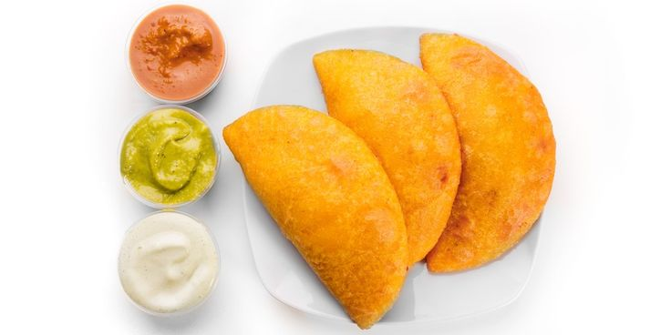

Empanadas recipe

An iconic breakfast of the Venezuelan streets
Historically the arepas have been a fundamental part in the daily lives
of Venezuelans. Breakfast? Arepa. Lunch? Arepa. Dinner? Yes, you guessed it.
Arepas. Fritas, asadas, andinas. Many tastes - many arepas.
Ingredients
-
For the dough:
- 2 cups grams pre-cooked corn flour (masarepa)
- 2 1/2 cups water
- 2 tablespoons vegetable oil
- Salt
-
For the filling (choose one):
-
Shredded Beef:
Shredded cooked beef, onions, bell peppers, tomatoes, olives, achiote oil (for color), cumin, garlic, and seasonings.
-
Cheese:
Grated queso blanco or your preferred cheese blend.
-
Black Beans:
Cooked black beans, mashed with sofrito (sautéed onions, bell peppers, garlic), cumin, and seasonings.
-
Cazón (Shark):
Flaked cooked shark, onions, peppers, spices, and achiote oil. (Other seafood fillings are also popular in Venezuela)
Steps
Make the dough:
- In a large bowl, combine corn flour with salt. Gradually add warm water, mixing with a spoon until a crumbly dough forms.
- If using, add a drizzle of oil for added flakiness.
- Knead the dough on a lightly floured surface until smooth and elastic, about 5-7 minutes.
- Cover the dough with a damp cloth and let it rest for 30 minutes.
Prepare the filling:
- Follow your chosen filling recipe to cook and prepare the ingredients. Ensure the filling is cool before assembling.
Assemble the empanadas:
- Divide the dough into equal balls. Roll each ball into a thin circle about 4-5 inches in diameter. You can use a rolling pin or a tortilla press.
- Place a generous spoonful of filling in the center of the dough circle.
- Fold the dough circle in half to form a crescent shape.
- Seal the edges tightly using a fork or by crimping with your fingers.
Fry:
- Heat enough oil in a large skillet or pot over medium heat (around 350°F).
- Carefully place the empanadas in batches, avoiding overcrowding the pan.
- Fry for 3-4 minutes per side, or until golden brown and crispy.
- Drain on paper towels to remove excess oil.
Serve and enjoy!
- Let the empanadas cool very slightly. And enjoy it with your faovorite dipping sauce like this guasacaca sauce.
Tips
- It is almost mandatory to enjoy a good empanada with a malta, or papelon
- Yes, empanadas are eaten hot. It is a convention. Don't ask, just do it.
The empanadas recipe might look similar to the arepa's one. But they're completly different vibes.